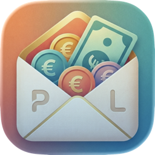

PocklitGib jedem Euro eine Aufgabe.
Eine Budget-App für Mac und iPhone, die deine Finanzen in deiner Hand lässt. Kostenlos.
Von Apple beglaubigt (notarisiert). Benötigt macOS 27 oder neuer. DMG öffnen und Pocklit in „Programme" ziehen. Demnächst auch im Mac App Store und, für iPhone, im App Store.
Privat von Grund auf
- Kein Konto, keine Registrierung, keine Server von uns. Pocklit lädt deine Daten niemals zu uns hoch.
- Deine Budgets, Konten und Buchungen liegen auf deinem Gerät.
- Optional hält die iCloud-Synchronisierung Mac und iPhone über deine eigene private iCloud auf dem gleichen Stand. Sensible Details werden verschlüsselt, bevor sie dein Gerät verlassen.
- Optional lässt sich jedes Budget komplett verschlüsseln, entsperrt per Passwort, Touch ID oder Face ID.
- Keine Werbung, keine Analyse-Tools, kein Tracking durch Dritte.
Budgetieren nach der Umschlagmethode
- Geld auf deinen Konten erscheint als „Zu budgetieren". Verteile es auf Kategorien, bis nichts mehr übrig ist.
- „Verfügbar" zeigt, was eine Kategorie nach den Ausgaben dieses Monats noch hat.
- Schnellbudgets, wiederkehrende Beträge und Sparziele.
- Mehrere Budgets nebeneinander.
Buchungen ohne lästige Arbeit
- Das Empfängerfeld schlägt Kategorien aus deiner eigenen Historie vor.
- Splitbuchungen, Umbuchungen, Kreditkarten, Abgleich mit dem Kontoauszug.
- CSV, OFX, QIF oder MT940 importieren, mit Vorschau, die bekannte Buchungen überspringt. Ein Budget aus einem YNAB-Export übernehmen.
- Auf dem Mac Buchungen direkt aus MoneyMoney senden, mit der mitgelieferten Erweiterung.
Sehen, wo es geblieben ist
Ausgaben nach Kategorie, Verlauf, Budget gegen Ist, Nettovermögen, wichtigste Empfänger. Automatische Sicherungen bei jedem Schließen eines Budgets.
So benutzt du es
Die Anleitung erklärt die Methode und jede Ansicht: Konten, Kategorien, Budgetieren Monat für Monat, Transaktionen, Import, Berichte, Sicherungen, Verschlüsselung und iCloud-Synchronisierung mit dem iPhone.
Mac und iPhone
Pocklit für Mac ist die vollständige App. Pocklit für iPhone ist der Begleiter: Budget auf dem Mac anlegen, iCloud-Synchronisierung einschalten, Ausgaben unterwegs erfassen. Die iPhone-App kommt über den App Store.